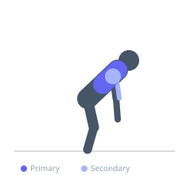

Exercise guide / Chest-Supported T-Bar Row Machine
Chest-Supported T-Bar Row Machine
The chest-supported T-bar row uses a dedicated machine with an angled pad that supports the chest, eliminating lower back involvement entirely. The bilateral T-bar handle allows both hands to row simultaneously at a neutral or pronated grip position. Because the chest is supported, trainees can focus entirely on maximizing back muscle contraction without compensatory trunk extension, making it an excellent hypertrophy tool for the mid and upper back.
Primary muscles
latissimus dorsi
rhomboid major
trapezius middle
Secondary muscles
deltoid posterior
brachialis
biceps brachii long head
Stabilizers
trapezius lower
Equipment
T-Bar Row
Optional
Lifting Straps


Starting position
- Load the T-bar machine with appropriate weight. Step onto the footrests and lean the chest into the angled support pad. Grip the handles and let the arms hang extended.
Setup
- Adjust the chest pad height so the arms can fully extend without the weight touching the floor. Ensure the chest stays in contact with the pad throughout.
Steps
- Step 1: Position the chest on the support pad, feet on the footrests, arms extended holding the handles.
- Step 2: Retract the scapulae and initiate the row.
- Step 3: Pull the handles toward the lower chest, driving the elbows straight back.
- Step 4: Squeeze the entire upper back at peak contraction.
- Step 5: Lower the weight under control until arms are fully extended.
Coaching cues
- Let the shoulder blades spread at the bottom
- Row the elbows straight back
- Chest stays on the pad
Breathing
- Exhale on the row, inhale on the descent.
Range of motion
- Full arm extension at the bottom to handles touching or near the lower chest at the top.
Tempo
- 2-1-3-0
Common mistakes
- Lifting the chest off the pad, negating the support
- Not retracting the scapulae — just bending the elbows without moving the shoulder blades
- Using too heavy a weight, reducing ROM
Safety
- Ensure the chest pad is at a comfortable height — too low or high causes neck strain
- Dismount carefully after each set
Training
- strength: 6–10 reps
- hypertrophy: 10–15 reps
- strength: 3–4 sets
- hypertrophy: 3–4 sets
- Rest: {'strength': 150, 'hypertrophy': 90}